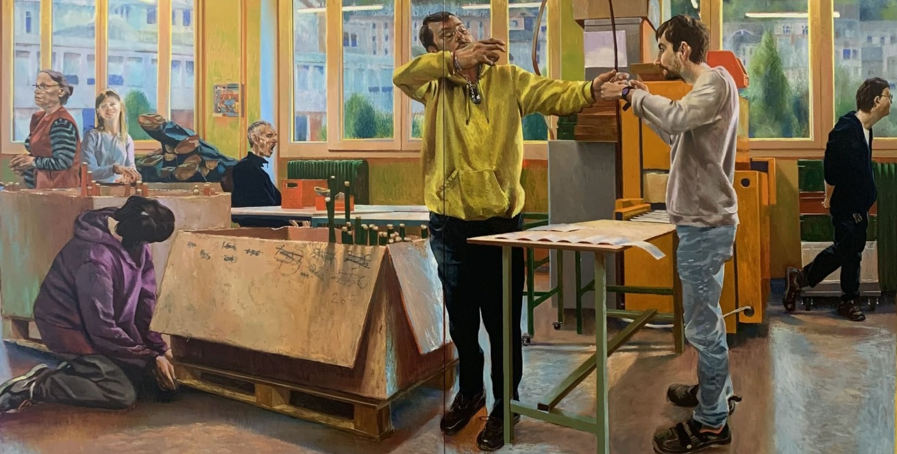
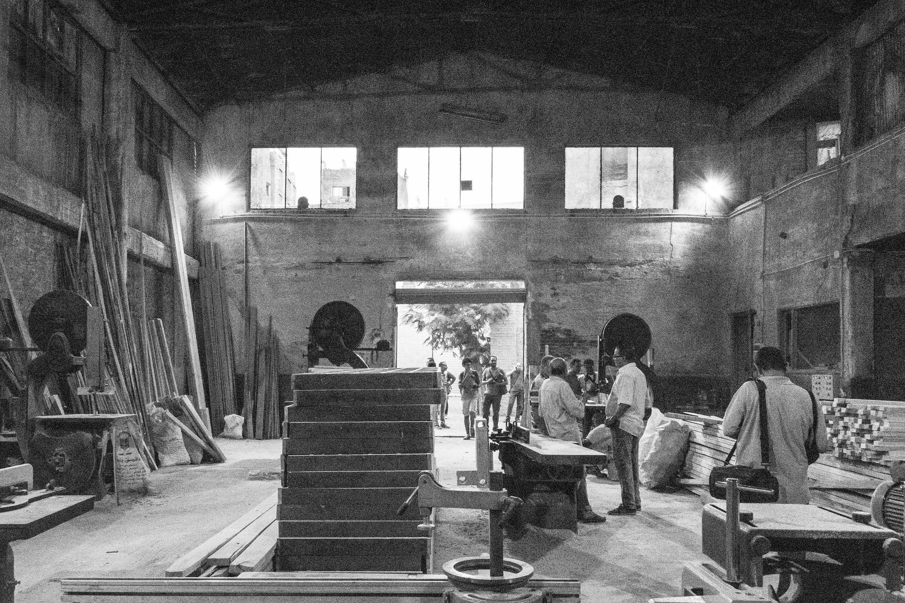

Version adaptée dys · Lesson 1
Lesson 1. Looking at work

Aménagements de la Lesson 1

Amorce (5 min)
Pour les élèves
Look at the painting for one minute. Do not write. Then, on your own, say three words in English about what you can see. After that, tell your three words to your partner.
Recueillir quelques mots au tableau, en anglais. Ne pas corriger encore le contenu : noter fidèlement, puis faire ajuster la langue si un mot est en français (atelier devient workshop, établi devient workbench, carton devient cardboard box, fenêtre devient window).
Activité 1. Observe and describe (12 min). Expression orale en continu.
Pour les élèves
Work in pairs. Look at the painting again. Answer these questions in English, in full sentences.
- Where are these people?
- Who can you see: only adults, only young people, or both?
- What objects can you see?
- What is in front of the large windows?
- What are these people doing?
Then share one sentence with the class.
Corrigé
Exemples acceptables. D'autres formulations justes sont possibles.
- They are in a school workshop. / They are at work, in a workshop.
- We can see young people and adults.
- We can see workbenches and cardboard boxes. We can also see large windows.
- Workbenches and cardboard boxes are in front of the large windows.
- They are working. (On n'affirme pas ce qu'ils fabriquent : ce n'est pas un fait visible certain.)
Activité 2. Read and understand (10 min). Compréhension de l'écrit.
Pour les élèves, texte A2 (environ 90 mots)
A painting of work
Laurent Proux is a contemporary French painter. He paints the world of work. In this painting, we can see young people and adults. They are in a school workshop. They are working. There are workbenches and cardboard boxes. There are large windows. We cannot hear what these people are saying. We can only imagine their words. Look at the painting carefully. What do you think they are making? Who do you think they are?
Pour les élèves, texte B1 (le texte A2, plus ce second paragraphe, environ 80 mots de plus)
A painting of work
Laurent Proux is a contemporary French painter. He paints the world of work. In this painting, we can see young people and adults. They are in a school workshop. They are working. There are workbenches and cardboard boxes. There are large windows. We cannot hear what these people are saying. We can only imagine their words. Look at the painting carefully. What do you think they are making? Who do you think they are?
Why paint a workshop today? Because work is a big part of our lives, and art can help us look at it with attention. In a school workshop, young people and adults often work side by side. The painting does not tell us the names of these people, and it does not tell us the exact object they are making. That is our task: we look, we describe what is there, and then we hypothesise. We speak as observers, not as inventors of false facts.
Pour les élèves, questions (A2 : questions 1 à 5. B1 : toutes les questions)
Read the text once. Then read it again and answer.
- Is Laurent Proux a painter of the past or a contemporary painter? Write the words from the text.
- What world does he paint?
- Where are the people in the painting?
- Name three objects or elements we can see, according to the text.
- True, false, or the text doesn't say: The painter tells us the exact words of the people in the workshop.
- (B1) What does the text ask us to do first, before we hypothesise?
- (B1) In your own words, why can a painting of a workshop be useful for us?
Corrigé
- He is a contemporary painter. The text says: "Laurent Proux is a contemporary French painter."
- He paints the world of work.
- They are in a school workshop.
- Accept three among: workbenches, cardboard boxes, large windows, young people, adults. (The workshop itself may be accepted as a place, not as an object.)
- False. The text says we cannot hear what they are saying, and that the painting does not tell us their words.
- The text asks us to look and to describe what is there first, and then to hypothesise.
- Accept a just reformulation, for example: Because work is an important part of our lives, and art helps us look at it carefully. / Because it helps us observe people at work and talk about what we see.
Activité 3. Hypothesise (12 min). Expression orale en continu, puis un échange en binôme.
Pour les élèves
Look at the painting. These questions have no single correct answer. Use I think..., Maybe..., They might be...
- Who are these people? Students, tutors, both?
- What are they making?
- What time of day is it? How do the large windows help you decide?
- What would two people in the painting say to each other? Prepare four short lines, in English, and be ready to say them to the class.
Corrigé
Il n'y a pas de réponse unique. Exemples acceptables :
- I think they are students and their tutor. / They might be young apprentices and adults who work with them.
- Maybe they are packing boxes. / I think they are making a product for an order. / They might be preparing materials for a task.
- I think it is daytime, because there are large windows. / Maybe it is the morning, during a workshop class.
- Exemple de mini-dialogue : - A: Can you pass me that box, please? - B: Sure. Here you are. Where do you want it? - A: On the workbench, please. - B: All right. I'll put it there.
Activité 4. Building your vocabulary (8 min).
Pour les élèves
Building your vocabulary
Copy these words into your notebook. Then match each word to its meaning.
- a workshop
- a workbench
- a cardboard box
- a window
- a tutor
- an apprentice
- at the moment
- to hypothesise
Meanings:
a. a person who is learning a job b. a table where people work with their hands or with tools c. a room or building where people make or repair things d. a person who helps and guides you at work or during PFMP e. now, at this time f. a glass opening in a wall that lets light in g. to say what you imagine, when you are not sure h. a container made of thick paper, used to store or carry things
Corrigé
1-c, 2-b, 3-h, 4-f, 5-d, 6-a, 7-e, 8-g.
Point de langue et trace écrite (6 min).
Pour les élèves. Trace pour le cahier
Present continuous, for a scene
We use the present continuous to say what is happening now, in the painting or in the workshop: subject + am / is / are + verb-ing.
- I am working in the workshop.
- He is checking the box.
- She is standing near the workbench.
- They are working in front of the large windows.
- What are they doing? They are working.
- What is he making? I think he is packing a box.
To hypothesise:
- I think they are students.
- Maybe they are preparing an order.
- They might be apprentices.
Travail à la maison (2 min pour donner la consigne).
Pour les élèves
Homework, Lesson 1
- Complete the sentences with the present continuous of the verb in brackets. a. The young people _______________ in the workshop. (work) b. An adult _______________ near the workbench. (stand) c. "What _______________ they _______________?" "I think they _______________ a box." (do / pack) d. We _______________ at a painting by Laurent Proux. (look)
- Write five sentences about the painting: three facts you can see, and two hypotheses with I think or Maybe.
- Learn the eight words from Building your vocabulary. You will use them again in Lesson 2.
Corrigé
- a. are working b. is standing c. are / doing / are packing d. are looking
- Exemples de faits : There are large windows. There are workbenches and cardboard boxes. Young people and adults are working in a school workshop. Exemples d'hypothèses : I think they are students and a tutor. Maybe they are preparing an order.
- (Mémorisation, pas de corrigé écrit.)